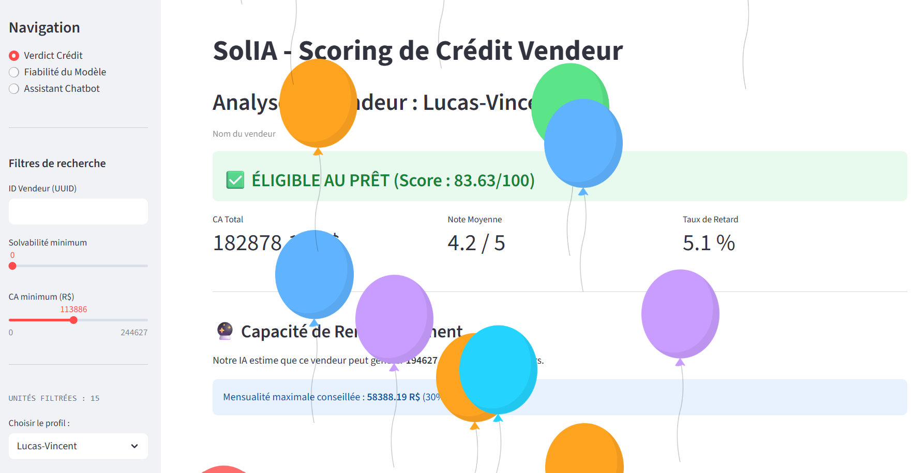
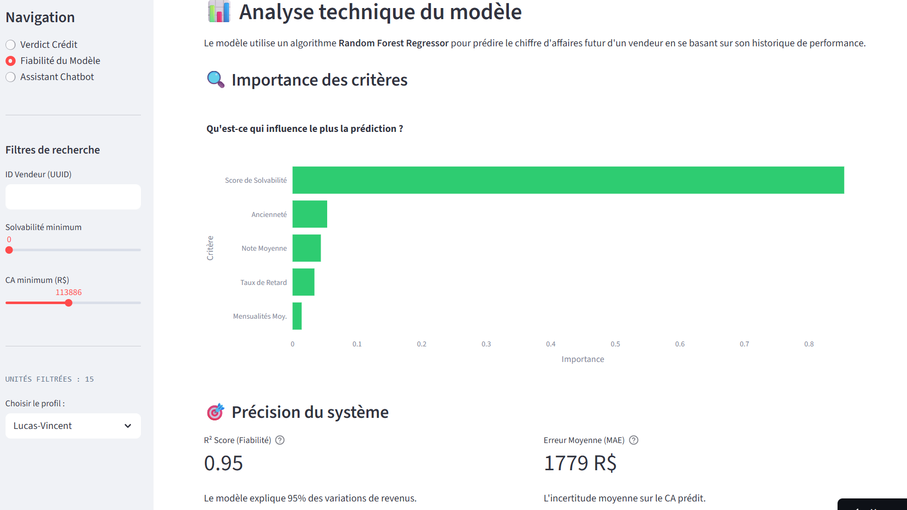
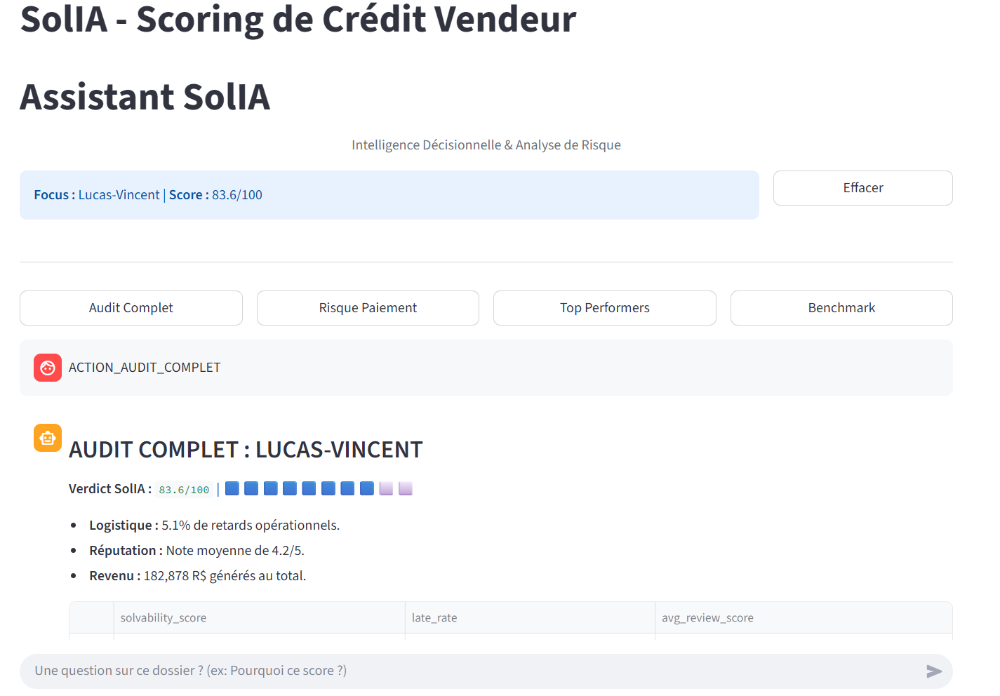
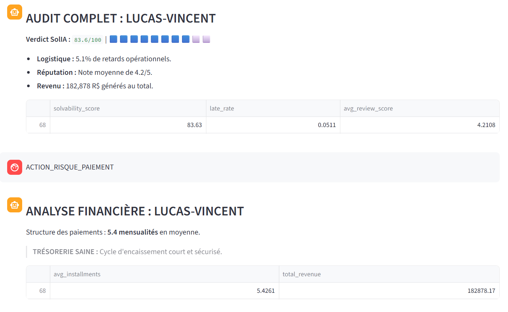
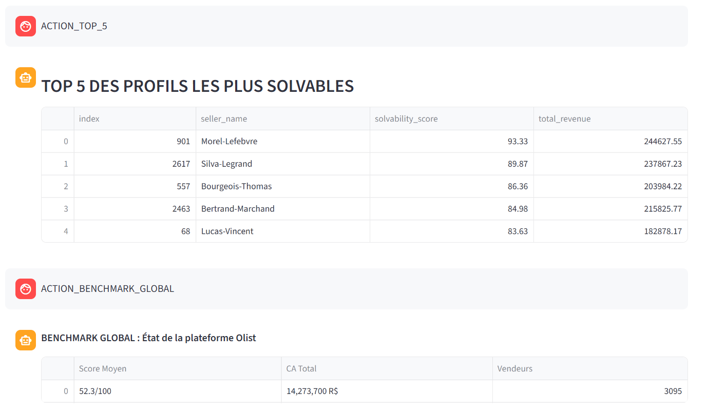

SolIA - solvabilité et business intelligence
SolIA is a data-driven financial decision-support product designed to assess the creditworthiness of e-commerce sellers in a B2B context. Developed within a Master’s program in Statistics for Evaluation and Forecasting at the University of Reims, the project leverages transactional and behavioral marketplace data to support lending and risk management decisions.
Initially conceived as a product recommendation system, SolIA evolved into a credit scoring and revenue forecasting solution tailored to e-commerce platforms. By aggregating multi-source marketplace data at the seller level, the system evaluates financial health, operational reliability, and customer satisfaction to determine loan eligibility.
SolIA combines a hybrid solvency score with a supervised machine learning model to predict future revenue and estimate repayment capacity. The product is deployed as an interactive decision tool, enabling real-time credit simulations and transparent, interpretable outputs for financial stakeholders.
Key Contributions
- Data aggregation & feature engineering : Aggregated six relational marketplace datasets at seller level to construct financial, behavioral, and operational indicators.
- Credit scoring design : Designed a hybrid solvency score combining performance, customer satisfaction, late rate and delivery reliability to quantify credit risk.
- Predictive modeling : Implemented a Random Forest regression model to forecast future seller revenue, supporting loan eligibility and repayment capacity assessment.
- Decision-support interface : Developed an interactive Streamlit dashboard to simulate credit decisions with interpretable visual verdicts and business-oriented KPIs.
- AI audit assistant : Developed an AI-powered chatbot to support financial audits by generating analytical summaries, interpreting model outputs, and highlighting key risk signals.
- API & system architecture : Designed a modular architecture using FastAPI for model serving and real-time predictions.
- Tools used : Python (pandas, NumPy, scikit-learn), SQL, Streamlit, FastAPI, Jupyter Notebook, and data visualization libraries.
Explore the full project, including scripts and reports
Visual Gallery




